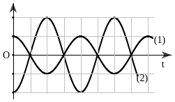

Bài 3 · Vận tốc, gia tốc trong dao động điều hoà · 20 câu
PHẦN I. Câu trắc nghiệm nhiều phương án lựa chọn
Mỗi câu có 4 phương án, chỉ chọn một đáp án đúng (0,25 điểm).
1
Thông hiểu
Biểu thức li độ của vật dao động điều hòa có dạng $x = A\cos(2\omega t + \varphi)$, vận tốc của vật có giá trị cực đại là
2
Thông hiểu
Trong dao động điều hòa $x = 2A\cos(\omega t + \varphi)$, giá trị cực đại của gia tốc là
3
Thông hiểu
Trong dao động điều hòa $x = A\cos(\omega t + \varphi)$, giá trị cực tiểu của vận tốc là
4
Thông hiểu
Một chất điểm dao động điều hòa với phương trình $x=6\mathrm{cos}\left( \pi t\right)$ (x tính bằng cm; t tính bằng s). Phát biểu nào sau đây đúng?
5
Thông hiểu
Một vật dao động điều hòa với chu kì 0,5$\pi$ (s) và biên độ 2 cm. Vận tốc của vật tại vị trí cân bằng có độ lớn bằng
6
Thông hiểu
Một vật nhỏ dao động điều hòa với biên độ 5 cm và vận tốc có độ lớn cực đại là 10π cm/s. Chu kì dao động của vật nhỏ là
7
Thông hiểu
Một vật dao động điều hòa có phương trình x = Acos($\omega$t + $\varphi$). Gọi v là vận tốc của vật khi vật ở li độ x. Biên độ dao động của vật là
8
Thông hiểu
Một chất điểm dao động điều hòa với biên độ 10 cm và tần số góc 2 rad/s. Tốc độ cực đại của chất điểm là
9
Thông hiểu
Một vật nhỏ dao động điều hòa với li độ $x=10\mathrm{cos}\left( \pi t+\frac{\pi}{6}\right)$ (x tính bằng cm, t tính bằng s). Lấy $\pi$2 = 10. Gia tốc của vật có độ lớn cực đại là
10
Thông hiểu
Một chất điểm dao động điều hòa trên trục Ox theo phương trình $x=5\mathrm{cos}\left( 4\pi t\right)$ ( x tính bằng cm, t tính bằng s). Tại thời điểm t = 5 s, vận tốc của chất điểm này có giá trị bằng
11
Thông hiểu
Một chất điểm dao động điều hoà với tần số bằng 4 Hz và biên độ dao động 10cm. Gia tốc cực đại của chất điểm bằng
12
Thông hiểu
Một vật nhỏ đang dao động điều hòa trên trục Ox với vận tốc $v=20\pi\mathrm{cos}\left( 2\pi t+\frac{2\pi}{3}\right)$ (cm/s) (t tính bằng s). Tại thời điểm ban đầu (t = 0), vật ở li độ
13
Thông hiểu
Một chất điểm dao động điều hòa với phương trình x = 20cos(2πt) (cm). Lấy $\pi$2 = 10. Gia tốc của chất điểm tại li độ x = 10 cm là
14
Thông hiểu
Một chất điểm dao động điều hòa trên trục Ox, gốc tọa độ O tại vị trí cân bằng. Biết phương trình vận tốc của chất điểm là $v=20\pi\mathrm{cos}\left( 2\pi t+\frac{\pi}{6}\right)$ (cm/s). Phương trình dao động của chất điểm có dạng
15
Thông hiểu
Một chất điểm dao động điều hòa trên trục Ox có phương trình $x=8\mathrm{cos}\left( \pi t+\frac{\pi}{4}\right)$ (x tính bằng cm, t tính bằng s) thì
16
Thông hiểu
Một chất điểm dao động điều hòa với phương trình $x=5\mathrm{cos}\left( 6\pi t+\frac{\pi}{2}\right)$(x tính bằng cm, t tính bằng s). Trong mỗi giây chất điểm thực hiện được
17
Thông hiểu
Một vật dao động điều hòa có phương trình $x=A\mathrm{cos}\left( \omega t+\varphi\right)$. Với a và v là gia tốc và vận tốc của vật. Hệ thức đúng là
18
Thông hiểu

Hình bên là hai đường hình sin biểu diễn hai trong ba đại lượng: li độ x, vận tốc v và gia tốc a theo thời gian t. Đường số (1) và đường số (2) lần lượt biểu diễn cho
19
Thông hiểu
Tìm phát biểu sai khi nói về dao động điều hoà.
20
Thông hiểu
Trong dao động điều hòa, phát biểu nào sau đây là không đúng? Cứ sau một khoảng thời gian $T$ thì